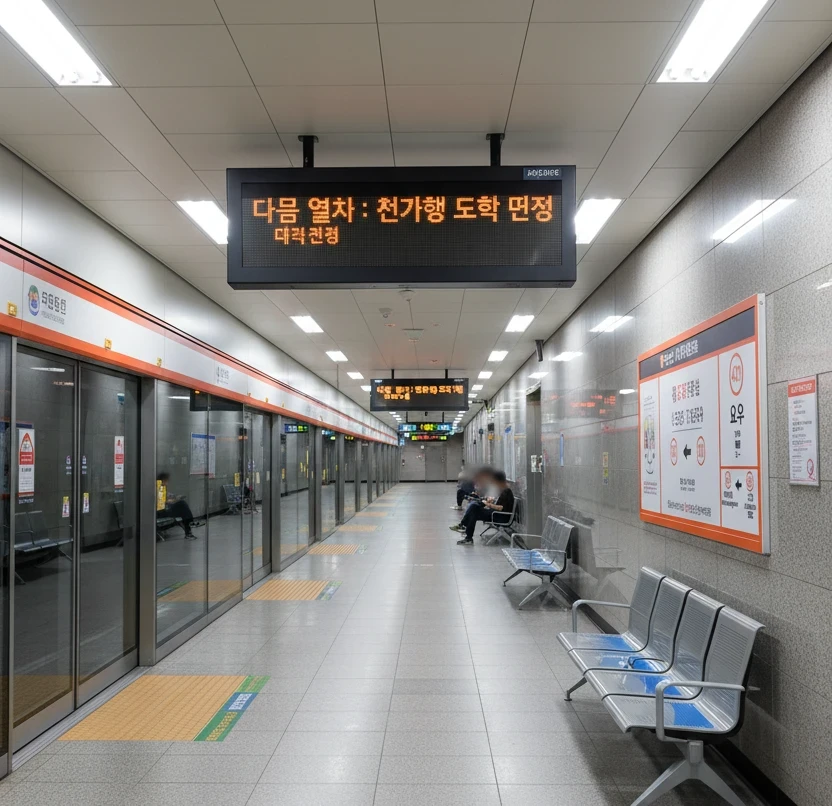

효빈 도시철도 4호선 421번 역이다. 효빈광역시 탄성군 도변읍 요우리 4-17 지하에 소재하고 있다. 4호선 급행열차가 필수적으로 정차하는 핵심 구간이다.
요우 택지지구에 있는 도시철도역이다. 효빈 동부지역에 새로 개발되기 시작한 이자지역의 부도심인 요우지구에 지어진 철도역으로, 지역중심지로 고송신도시나 중앙로 상권 접근이 어려운 사람들에게 대체제로서 자리매김했다. 현재는 아예 자체적인 상권으로 성장한 이자 지역과 연담화되어 있어 이자지역과의 교류가 활발하다. 구도심급인 안천지구 대비 신시가지에 해당하여 신도시 느낌이 물씬 나는 지역이다.
|
4
요우역 출구 정보
|
||
|---|---|---|
| 번호 | 주요 시설 및 방향 | 비고 |
| 1 | 요우초등학교 | |
| 2 | 요우초등학교 | |
| 3 | 요우중학교, 도변여자중학교, 도변여자고등학교 | |
| 4 | 요우초등학교 | |
| 5 | 요우중학교 | |
| 요우역 이용객 통계 | ||
|---|---|---|
| 연도 | 일평균 이용객 | 비고 |
| 2020년 | 10,616명 | |
| 2021년 | 10,826명 | |
| 2022년 | 16,178명 | |
| 2023년 | 17,020명 | |
| 2024년 | 17,392명 | |

| 백합공원 ↑ | ||||
| 하 | ㅣ | ㅣ | 상 | |
| ↓ 도변 | ||||
| 상 | 4 효빈 도시철도 4호선 (완행/급행 공용) | 남구청 · 해운산업지구 방면 (급행은 하가 정차) |
| 하 | 4 효빈 도시철도 4호선 (완행/급행 공용) | 도변 · 천가 방면 (급행은 도변 정차) |
14, 34, 57, 571, 591, 592, 752, 753, 5000
41, 43, 57, 571, 951, 952, 752, 753, 5000R
탄성군 도변읍 요우리에 위치한 4호선 요우역은 역명인 '요우(You)'의 발음이 러브라이브! 선샤인!!의 주역 와타나베 요우(You Watanabe)의 이름과 같아 성지순례 장소로 꼽힌다.
바로 인근에 위치한 4호선/5호선 도변역(渡 辺 驛)이 요우의 성(姓)인 '와타나베'와 한자가 같기 때문에, 팬들은 도변역(성) → 요우역(이름) 순서로 이동하며 캐릭터의 풀네임을 완성하는 순례를 즐기곤 한다. 이쯤 되면 노린 거 아닌가 싶다.
게다가 최근 4호선 급행열차가 정차하게 되면서 성지순례를 하러 오는 타지 팬들의 접근성이 미친 듯이 좋아졌다. 덕분에 주말만 되면 하가역 등지에서부터 4호선 급행을 타고 날아온 오타쿠들이 대거 하차하여 "전속 전진 요소로!"를 외치는 진풍경을 볼 수 있다.
2023년, 고립주의자 윤재훈이 도변역에 이어 요우역까지 찾아와 성지순례객들을 위협하려다 실패한 사건이 있었다. 도변역에서 물세례를 맞고 쫓겨난 윤재훈이 분을 삭이지 못하고 인근 요우역으로 이동해 2차 난동을 시도했으나, 이미 소식을 들은 요우역의 팬들과 역무원들이 미리 대처하여 별다른 피해 없이 제압당했다.
이 사건 이후 요우역과 도변역은 단순한 교통 시설을 넘어, 국경을 초월한 팬덤의 연대와 혐오를 이겨낸 승리의 성지로 더욱 유명해졌다.